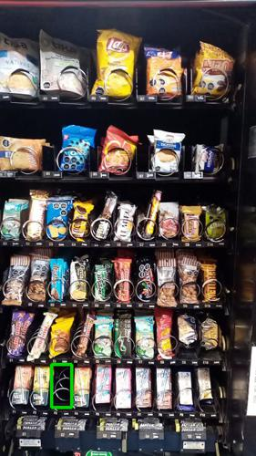
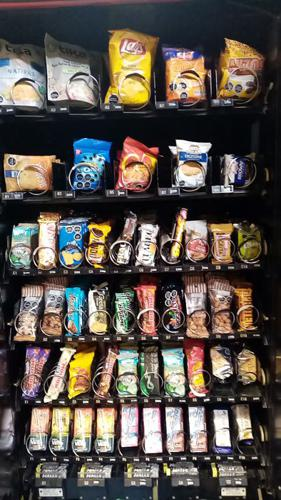

Antes de AbastecerSe detectó 1 espiral vacio.

id 375.255 |
Luego de AbastecerNo se detectaron espirales vacios.

id 375.256 |
|
| Fecha |
Reporte |
Vacios ANT |
% Abast |
% Quiebre |
Sum QTY |
Rotación Diaria |
Abast hace (días) |
| 23-07-2021 |
Viendo |
1 |
2.8 |
2.5 |
24 |
12 |
2 |
| 21-07-2021 |
Ver |
2 |
5.7 |
5.0 |
48 |
6 |
7 |
| 14-07-2021 |
Ver |
2 |
6.0 |
5.0 |
51 |
10 |
5 |
| 09-07-2021 |
Ver |
1 |
5.9 |
2.5 |
50 |
25 |
2 |
| 07-07-2021 |
Ver |
0 |
5.2 |
0 |
44 |
8 |
5 |
| 02-07-2021 |
Ver |
0 |
5.2 |
0 |
44 |
22 |
2 |
|
|
|
Se abasteció la máquina con:
Total de 24 unidades de 3 productos.
| Qty. |
Producto |
SubFamilia |
Familia |
| 10 |
Negrita 20 Gr |
Bañados |
Snack |
| 8 |
Tuareg Coco Indiv. 24X48 |
Galletas |
Snack |
| 6 |
Andifrut Naranja Tetra 20 |
Jugos |
Tetras |
| Productos más abastecidos en últimas 6 semanas:
| Nro. Abast |
Qty/Abast |
Producto |
Abast hace (días) |
Fecha |
| 4 |
6 |
Papas Fritas Lays Evercri |
2 |
21-07-2021 |
| 3 |
12 |
Muibon Mani 40G 12U |
2 |
21-07-2021 |
| 3 |
9 |
Galletas Club Social |
9 |
14-07-2021 |
| 3 |
7 |
Ramitas Queso Evercrisp |
9 |
14-07-2021 |
| 3 |
6 |
Andifrut Naranja Tetra 20 |
0 |
23-07-2021 |
| Productos menos abastecidos en últimas 6 semanas:
| Nro. Abast |
Qty/Abast |
Producto |
Abast hace (días) |
Fecha |
| 1 |
4 |
Soda Cubo Line 27X54 Gr |
16 |
07-07-2021 |
| 1 |
5 |
Papas Fritas Tika Chiloe |
9 |
14-07-2021 |
| 1 |
6 |
Mizos Chocolate Naranja |
16 |
07-07-2021 |
| 1 |
6 |
Leche Tetra Mono Frutilla |
2 |
21-07-2021 |
| 1 |
6 |
Leche Tetra Mono Chocolat |
23 |
30-06-2021 |
|
|